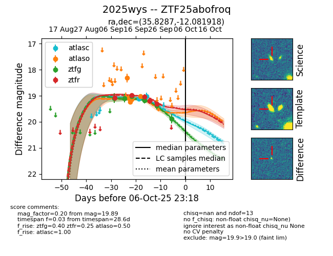
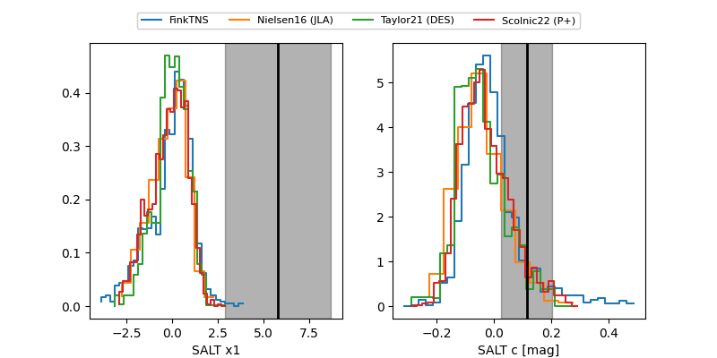

FINK: ZTF25abofroq
Lasair: ZTF25abofroq
ALeRCE: ZTF25abofroq
TNS: 2025wys
YSE: 2025wys
ZTF25abofroq (ztf,fink)
2025wys (tns,yse)
equatorial (ra, dec) = (35.8287,-12.08192)
galactic (l, b) = (182.4907,-63.72974)


last atlasc=19.03, atlaso=19.02, ztfg=19.89, ztfr=19.32
2 atlasc, 5 atlaso, 6 ztfg, 5 ztfr detections